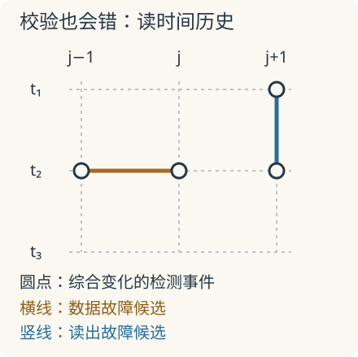

本页目录
前沿物理 II · 容错量子计算：从综合历史到持续纠错
先修：量子纠错、退相干、测量与噪声。本讲把理想码推进到表面码、带错误的综合测量及近期硬件实验；重点是逻辑信息怎样在反复出错的操作中仍被保护。文献核查截至 2026-09-08。
校验仪本身也会出错，谁来校验它？
1. 先得到一个可核算的基准
三比特重复码把未知态编码成 \(\alpha|000\rangle+\beta|111\rangle\)，测 \(Z_1Z_2,Z_2Z_3\) 定位单个 \(X\) 错误。这里测的是相邻位的奇偶关系，不是直接读取 \(\alpha,\beta\)。如果三个比特独立地以概率 \(p\) 位翻转，理想恢复在至少两位出错时失败：
于是
在 \(0<p<1/2\) 内，\(p_L<p\)。这只是理想三比特、独立位翻转、完美校验与恢复的结论；\(1/2\) 绝不是真实表面码的硬件阈值。单个 \(Z\) 错误仍能破坏逻辑相位，这个码不保护一般量子噪声。
先预测：若三位的边缘错误率仍是 \(p\)，但经常一起翻转，逻辑错误率是否仍由同一多项式给出？
静态后备：取 \(p=0.1\)，独立错误给 \(p_L=0.028\)。另设每轮以概率 \(c\) 选择共同错误分支：在该分支中，以概率 \(p\) 同时施加 \(X_1X_2X_3\)，否则无错；其余轮次使用独立噪声。每位的边缘错误率仍为 \(p\)，但
\(c=1/2\) 时得到 \(0.064\)，\(c=1\) 时为 \(0.1\)。实验只演示一个噪声扇区中的相关性，不是表面码仿真，也不是完整量子纠错。降低单比特平均错误率与消除相关事件是不同的任务。
2. 为什么表面码要同时测两类关联？
用方格上的边承载数据比特，定义顶点与面上的校验算符
相邻星与面共享零条或两条边；每共享一条边，交换 \(X,Z\) 产生一个负号，两条边的负号相消，所以 \([A_v,B_f]=0\)。这允许同时约束两类综合：\(Z\) 型错误会翻转相关 \(A_v\)，\(X\) 型错误会翻转相关 \(B_f\)，不必测出逻辑内容。真实平面边界要相应调整校验支持，不能直接裁掉格子而不改定义。Kitaev 的模型原论文，1997-07-09 提交
把一串 \(Z\) 错误看作格上的一条链。内部顶点与两条错误边相接，两次反对易相消；只有端点留下综合。因此测量告诉我们端点，通常不能唯一确定整条链。解码器选一条候选恢复链 \(C\)，成功条件并非“猜中每个错误”，而是实际错误 \(E\) 与恢复的乘积在代码空间内等价于稳定子。若乘积成为跨越相应边界的非平凡逻辑链，综合恢复正常，逻辑信息却已改变。
最小不可检测逻辑算符的权重称为码距 \(d\)。在理想综合条件下，码距 \(d\) 可纠正至多 \(\lfloor(d-1)/2\rfloor\) 个任意位置的 Pauli 错误；带故障的门线路还必须防止一个辅助比特错误扩散成低阶逻辑故障。
3. 时间方向也是解码图的一部分
现实中，每一轮综合值 \(s_v(t)=\pm1\) 也可能被读错。比起只看某轮是否为负，更有用的是检测事件
它记录相邻轮次是否变化。一个持续的数据错误在出现时改变相邻空间校验；一次孤立的读出错误则会在同一位置的前后两个时间比较中留下事件。因此反复测量提供的是一张空间加时间的证据图，不是重复投票同一张无误照片。

在简化独立链模型中，一条候选链含 \(\ell\) 个相同概率故障，其相对似然正比于 \([p/(1-p)]^\ell\)。取负对数便得到边权之和 \(\ell\log[(1-p)/p]\)，解释了匹配解码为何偏向短的高概率解释。但多条链的简并、相关噪声、泄漏出计算子空间及线路传播都可能改变权重；“最短路径”不是所有硬件上的精确最大似然解码。
4. 阈值、存储寿命与通用计算不是同一指标
在指定局域噪声模型与容错构造下，阈值思想保证物理错误足够小时可通过增加资源压低逻辑故障。实验常在一定范围内拟合
这是帮助读趋势的近似缩放式，不是所有相关噪声下的精确公式；\(p_{\rm th}\) 依赖码、线路和解码器。有限几个码距上的下降，是有限尺寸的实验支持，不能替代对任意规模的验证。
实验，2024-12-09 在线发表：Google 团队报告 Willow 上低于表面码阈值的存储器；码距每增加 2，逻辑错误压低因子约为 \(2.14\)，距离 7 的每轮错误约 \(0.143\%\)，并实现了距离 5 的实时解码。数字对应论文规定的存储与解码条件，不能当作通用算法中任意逻辑门的错误率。期刊论文、作者预印本
将长算法拆成 \(M\) 个潜在失败位置，即使每步失败概率为 \(q\)，总体失败也可能累积；无需独立假设，联合界已给出 \(P(\text{至少一错})\le Mq\)。所以“存得比单个物理比特久”距离“完成很深的通用算法”还隔着逻辑门、状态注入、解码延迟与资源开销。
5. 最新推进：用纠错数据追踪控制漂移
实验，2026-07-08 在线发表：Sivak 等在 Willow 上把检测事件用作学习信号，应对人为注入的漂移。联合调整控制与解码后，相比固定策略，逻辑错误率的均值下降 31%；其分布标准差缩小至约 \(1/3.5\)，这才是“稳定性提升 3.5 倍”的指标含义。Nature 原论文
实验重复执行较短的量子存储任务，每次试验都重新准备量子态，再用数据更新控制策略；它没有在同一次长算法中持续保持逻辑态并实时调参。后一个场景在论文中由距离 3 表面码的数值模拟研究，需权衡探索参数带来的额外错误；解码器调整还依赖逻辑错误率估计，直接扩展到实时运行仍有限制。作者全文的实验与模拟说明
检测事件减少只是优化的代理信号，仍须独立检查逻辑错误。下一步是让学习跟得上漂移，同时保证实际采用的探索策略也保护计算，而不只验证最后学得的平均策略。
尚未消失的难题包括罕见大范围相关故障、持续漂移、非 Clifford 逻辑门的成本，以及解码吞吐量是否跟得上综合产生速度。评价新成果时，应同时问：保护什么逻辑操作、用了多少物理比特、运行多少轮、是否实时纠正、是否丢弃失败样本？只给一个“逻辑比特数”无法回答这些问题。
6. 迁移题
- \(p=0.02,c=0.25\)，求玩具逻辑失败率；与完全独立时相比增加多少？为什么不能靠单比特边缘错误率识别这个差别？
- 某校验真实值一直为 \(+1\)，第 4 轮被误报为 \(-1\)，其余读出正确。哪些 \(D_v(t)\) 会亮起？能否把一个事件直接解释成一处数据比特错误？
答案与推理
- 独立值为 \(3(0.02)^2-2(0.02)^3=0.001184\)；混合后为 \(0.75\times0.001184+0.25\times0.02=0.005888\)，增加 \(0.004704\)。两个模型每位的边缘概率相同，区别在联合分布。
- \(D_v(4)\) 与 \(D_v(5)\) 都为 1，因为误报开始和结束各造成一次变化。一个孤立事件不能唯一定位数据错误；要结合其他位置、时间及边界事件解码。
速查：从独立错误到持续容错
- 理想三比特位翻转码：\(p_L=3p^2-2p^3\)；相关分支使它变为 \((1-c)p_L+cp\)，不保护一般相位噪声。
- 表面码校验对易，综合定位错误链端点；码距与完整线路的容错性需同时检查。
- 检测事件 \(D_v(t)=[1-s_v(t)s_v(t-1)]/2\) 需要空间和时间历史共同解码。
- 低阈值存储、实时解码、应对漂移与通用容错算法是不同里程碑。2026 控制实验仍有明确任务与噪声条件。